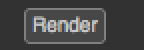

Synopsis
A button parameter that appears in the settings panel of the node.

To insert code to be executed upon a user click of the button, register a function to the
onParamChanged callback on the node.
Member functions description
-
NatronEngine.ButtonParam.trigger()
Triggers the button action as though the user had pressed it.